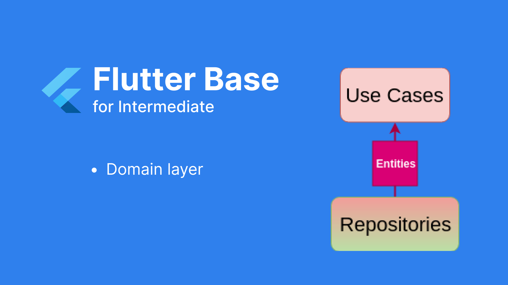

Triển khai Base Flutter - Phần 4: Chi tiết - Tầng Domain
I. Nhiệm vụ
Nhiệm vụ của tầng này chính là xử lý các business logic trong ứng dụng chứa trong use cases. Nó liên kết với tầng data dựa theo interface cho repositories

II. Các công việc cần xử lý
Tương ứng với hình vẽ trên, ở tầng Domain này chúng ta sẽ có:
- Triển khai use cases
- Triển khai entities
- Triển khai interface repositories, xử lý việc tự động cast object
III. Chi tiết xử lý
1. Triển khai Use cases
Nhiều bạn có thể thắc mắc rằng, trong bloc pattern thì bloc cũng đã chứa những xử lý logic tại đây, như vậy chúng ta đâu cần phải có thêm use cases để xử lý chứ? Nhưng đó là 1 sai lầm nhỏ, do việc đánh đồng giữa xử lý business logic với xử lý presentation logic ở mức tương tác giữa người dùng với các feature đó. Việc phân biệt được 2 logic riêng biệt này sẽ giúp chúng ta tái sử dụng code ở use cases rất tuyệt vời.
Một ví dụ nhỏ để minh họa cho tác dụng của use cases là mình có logic
logout tài khoản, ở đây mình phải thực hiện các công việc như: Xóa các
thông tin lưu trữ về người dùng, hủy đăng ký fcm. Và bạn thử nghĩ xem
biết đâu rằng trong ứng dụng của mình có 2 nơi có thể bấm logout để
thoát đăng nhập: 1 là ở trang profile, 2 là ở trang chủ có icon cá
nhân bấm vào thì hiện lên dialog và cũng có nút cho phép logout. Nếu
gặp phải trường hợp như này bạn sẽ thấy thật đơn giản khi có thể tái
sử dụng 1 hàm xử lý LogoutUseCases duy nhất.Một UseCases luôn được
định nghĩa rõ ràng đầu vào và đầu ra, chính vì thế nó cũng rất dễ dàng
để có thể kiểm thử tại đây.
2. Triển khai entities
3. Triển khai interface repositories, xử lý việc tự động cast object
Tiếp theo là việc hoàn thiện cho repositories mà mình đã hứa với các bạn là để lại cho phần này. Tầng domain chỉ chứa các interface cho repo còn việc thực thi chúng thì nằm ở tầng data. Và việc quan trọng nhất ở đây mà mình cần xử lý chính là việc tự động cast được về đúng kiểu dữ liệu cho data được nhận về từ remote data source. Như khi bạn thực hiện login, dữ liệu cuối cùng mà bạn mong muốn được nhận được sau khi login thành công rõ ràng phải là LoginResponse (chứa id, token, …) chứ ko phải chỉ là 1 object dynamic nữa. Để cho việc này được tự động hơn thì chúng ta cần phải làm gì?
Để giải quyết được việc đó, chúng ta có thể sử dụng Generic types trong Flutter. Mình tạo ra 1 object là DataResponse là data đã qua xử lý việc tự động cast object mà repositories trả về, tương tự như ServiceResponse và chỉ khác là dữ liệu thành công đã tự động có kiểu trả về tương ứng.

Điều quan trọng là hàm tự động chuyển đổi kiểu dữ liệu kia hoạt động như thế nào? Rất đơn giản thôi, chúng ta sẽ thường có các dạng dữ liệu nhận về khi call api:
- Trả về dạng đối tượng: {key: value}
- Trả về dạng mảng đổi tượng: [1, 2, 3], [“a”, “b”], [{key: value}, {key: value}]
- Api trả về dạng dữ liệu: true/false, number, string

Như vậy là đã hoàn thành xong việc tự động cast dữ liệu, lúc này
repositories sẽ trông như thế này: